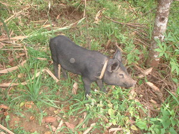

babuy1 
/babuy/
n.
“pig”
n.
Sus_sp.
pig
Ka babuy sabeka ne mananap iling te usa piru warè dè sungey wey usig ne egpanuwal seini. Daruwa se kalasi te batek kayi due maangkag wey meitem, mahintalunan wey ayam. Mapupul se irung kayi piru egpakasudsud te tanè minsan makehal. Warè nenekeg-iling ka karakelan kayi due ka amana dakel, due ka eleg-eleg dè wey due dereisek ne kalasi. Amana ne malambu ka ngalap kayi piru ka duma ne etew kenè egkeen kayi su malindit kun wey egpakabehey degma te dalu.
Mania te igbelegyè nu ka babuy nu?
Why do you sell your pig?
Wrd.Gloss: pig
O. Syn. baketin
Eng. pig; swine; pork
Tag. báboy
Ceb. baboy
Ilo.: báboy
Tigwanon: babuy
Binukid: babuy
Cagayano: babuy
Kinamigin: babuy
Tagbawa: babuy
Obo: babuy
Cotabato Manobo: babuy
Dibabawon: babuy
WBM: bavuy
Ilianen: bavuy
Proto: babuy
OCM: Fauna (136)
DDP: Hoofed animals (1.6.1.1.3)
Idiom: kutu te babuy
—tick
Idiom: manggianak ne babuy
—mother pig
Online dict status: -
Usage level: B
vi.
for someone (egbebabuy, migbebabuy/imbebabuy, bebabuy, agent, eg><ø-rdpCV-) to keep or raised domestic pigs
Egbebabuy a su eyew due igpakabelegyè ku ke due me prublima ne egginguma.
I will raise pigs so that I have them to sell if problems arises.
Online dict status: -
Usage level: R
Updated by: RJH,AAA,TME,NJK,RAA
Last updated: 17/Nov/2009
"babuy" in text "Datu Gawilan Rebels against the Government"
"babuy" in text "The Barrio Fiesta (Egsahakeen) and Castration"
"babuy" in text "The Barrio Fiesta (Egsahakeen) and Castration"
"babuy" in text "The Barrio Fiesta (Egsahakeen) and Castration"
"babuy" in text "The Barrio Fiesta (Egsahakeen) and Castration"
"babuy" in text "The Barrio Fiesta (Egsahakeen) and Castration"
"babuy" in text "Two carabaos fighting"
"babuy" in text "Aurelio's Marriage"
"babuy" in text "Aurelio's Marriage"
"babuy" in text "Cooking in Bamboo"
"migbabuy" in healthbook "Migsistu si Wini"
"egbabuyen" in healthbook "Migsistu si Wini"
This page last updated: 19/May/2012
Copyright © 2009-2010, Matigsalug Language Christian Association, Inc